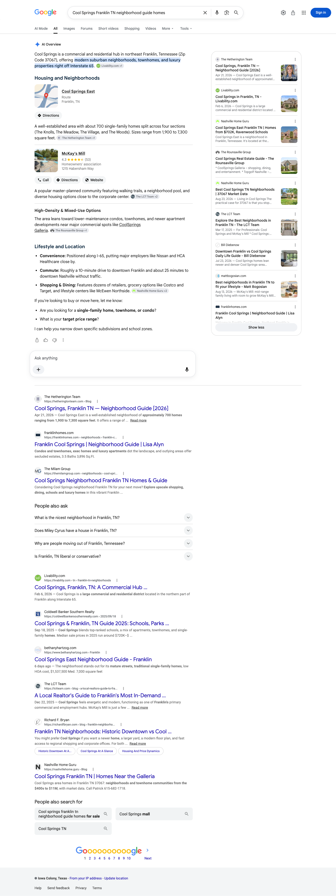
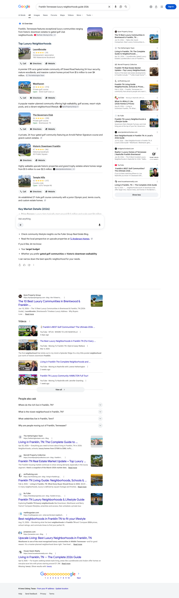
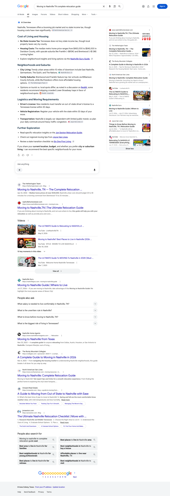

August 2026 | The Hetherington Team
Executive summary
In August, hetheringtonteam.com was named as a source on twelve of the twelve relocation and neighborhood questions we track across Google AI Overviews, Perplexity and ChatGPT. That is every question in the tracked set: each one came back cited on at least one engine in this month’s readings. The thinnest of them is the Nashville-from-California question, which Google’s AI Overview carries on its own, and it is the clearest single target in this report.
Perplexity names you on eleven of the twelve and ChatGPT on eight. Between them they carry Westhaven in both phrasings buyers actually use, both downtown questions, Cool Springs, The Grove, the Franklin luxury question and Nashville relocation.
Google’s AI Overview named you on nine of the twelve. Google wrote an AI Overview on all twelve of the questions we track this month, so on the readings we took, every buyer question in this set had an AI answer sitting above the ordinary results and your name was inside most of them. The remaining three are the runway, and the pages behind them are already written and published.
The result rests on a library rather than on one strong page. Ten separate pages on hetheringtonteam.com earned this month’s citations, from the Franklin pillar and the Nashville relocation guide down to individual neighborhood guides for Cool Springs, Westhaven, The Grove, Historic Downtown and Laurelbrooke.
One note on the tiles below. The clicks figure is your total Google organic Search clicks for the dates shown, across the whole site. It is there for context, not as a count of the visits these AI answers sent.
Citation matrix
✓ Cited: your site is among the sources that answer drew on
– Not cited in the reading for that column
◦ Google did not generate an AI Overview for this question, so there was no AI answer to be cited in
| Buyer question | Google AI Overview | Perplexity | ChatGPT | |
|---|---|---|---|---|
| Cool Springs Franklin TN best place to livehetheringtonteam.com | ✓ | ✓ | ✓ | |
| Cool Springs Franklin TN neighborhood guide homeshetheringtonteam.com | ✓ | ✓ | ✓ | |
| Franklin Tennessee luxury neighborhoods guide 2026hetheringtonteam.com | ✓ | ✓ | ✓ | |
| The Grove College Grove Greg Norman golf homeshetheringtonteam.com | ✓ | ✓ | ✓ | |
| Living in Franklin TN neighborhoods schools luxury homeshetheringtonteam.com | ✓ | ✓ | – | |
| Moving to Nashville TN complete relocation guidehetheringtonteam.com | ✓ | ✓ | – | |
| Downtown Franklin TN homes walkable neighborhoodhetheringtonteam.com | – | ✓ | ✓ | |
| Living in The Grove College Grove Tennesseehetheringtonteam.com | – | ✓ | ✓ | |
| Westhaven Franklin TN neighborhood guide homes amenitieshetheringtonteam.com | ✓ | ✓ | ✓ | |
| What is it like to live in Westhaven Franklin TNhetheringtonteam.com | ✓ | ✓ | ✓ | |
| Historic Downtown Franklin TN living neighborhoodhetheringtonteam.com | – | ✓ | – | |
| Moving to Nashville from California best neighborhoods | ✓ | – | – |
Reading the matrix. Twelve of the twelve questions are cited on at least one engine. Perplexity carries eleven, ChatGPT carries eight, and Google’s AI Overview names you on nine. The rows are ordered by how many engines name you, so the questions carried by all three read first: Cool Springs in both phrasings, the Franklin luxury question and The Grove golf question. The last row, moving to Nashville from California, is carried by Google’s AI Overview alone, so it is where the answer engines still have room, and it is the cleanest test available in September.
One note on naming. Google shows this site under the name The Hetherington Team, so a source credited to that name and one credited to hetheringtonteam.com are the same site. Two things are worth knowing about how to read the columns. Perplexity and ChatGPT were read on multiple days between August 7 and August 25. Google’s AI Overview column is different: it is a single reading of each question taken on August 29, read from the page itself rather than across the month, so treat it as a snapshot. A dash there means your site was not among the sources Google showed on that one reading, which is not the same as being absent for the month. Second, all three engines rebuild their answers on every run and Google localizes its answers by where the search is run from, so a check mark means your site was among the sources on at least one reading in that window, not that it appears on every run. The reverse matters just as much: a question without a mark is one we have not seen you carried on yet, not a settled absence, because a different reading on a different day can return a different set of sources. Source lists were read as first rendered, so any list of sources named here is what the engine showed first, not a complete inventory.
Story one
Perplexity names hetheringtonteam.com as a source on eleven of the twelve questions. That is every question in the tracked set but one. It is not leaning on a single strong page either: it reaches the Franklin pillar, the Nashville relocation guide and the individual neighborhood guides depending on what the question asks for.
Story two
Google produced an AI Overview on twelve of the twelve tracked questions this month and named hetheringtonteam.com on nine of them. Read the first half of that sentence first: on these readings Google produced an answer above the ordinary results on every buyer question in this set, and your name was inside most of those answers. Google is the second strongest engine in this report, and the only one carrying the Nashville-from-California question.
| Buyer question | Status | Your page carried as the source |
|---|---|---|
| Cool Springs Franklin TN best place to live | Cited | Cool Springs neighborhood guide |
| Cool Springs Franklin TN neighborhood guide homes | Cited | Cool Springs neighborhood guide |
| Franklin Tennessee luxury neighborhoods guide 2026 | Cited | Living in Franklin guide |
| The Grove College Grove Greg Norman golf homes | Cited | The Grove neighborhood guide |
| Living in Franklin TN neighborhoods schools luxury homes | Cited | Living in Franklin guide |
| Moving to Nashville TN complete relocation guide | Cited | Nashville relocation guide |
| Westhaven Franklin TN neighborhood guide homes amenities | Cited | Westhaven neighborhood guide |
| What is it like to live in Westhaven Franklin TN | Cited | Westhaven daily life guide |
| Moving to Nashville from California best neighborhoods | Cited | Best Nashville neighborhoods for Californians |



Story three
ChatGPT names hetheringtonteam.com on eight of the twelve questions. The neighborhood guides do the work here: Cool Springs in both phrasings, both Westhaven questions, The Grove in both phrasings, downtown, and the Franklin luxury question.
| Buyer question | Status | Your page carried as the source |
|---|---|---|
| Cool Springs Franklin TN best place to live | Cited | cool springs franklin tn neighborhood guide 2026 living in franklin tn the complete guide to neighborhoods schools luxury homes 2026 |
| Cool Springs Franklin TN neighborhood guide homes | Cited | cool springs franklin tn neighborhood guide 2026 |
| Franklin Tennessee luxury neighborhoods guide 2026 | Cited | living in franklin tn the complete guide to neighborhoods schools luxury homes 2026 |
| The Grove College Grove Greg Norman golf homes | Cited | the grove college grove tn neighborhood guide 2026 |
| Downtown Franklin TN homes walkable neighborhood | Cited | historic downtown franklin tn neighborhood guide 2026 |
| Living in The Grove College Grove Tennessee | Cited | hetheringtonteam.com |
| Westhaven Franklin TN neighborhood guide homes amenities | Cited | westhaven franklin tn neighborhood guide 2026 |
| What is it like to live in Westhaven Franklin TN | Cited | westhaven franklin tn neighborhood guide 2026 |
Pages earning citations
These are the ten pages on hetheringtonteam.com that were carried as a source in an AI answer on this month’s readings, and how many of the twelve tracked questions each one answered. Most are guides we published for you; the rest are pages that were already on your site and are now being pulled into answers alongside them.
| Your page | Questions cited on | Questions it answered |
|---|---|---|
| living in franklin tn the complete guide to neighborhoods schools luxury homes 2026 | 3 | Cool Springs Franklin TN best place to live; Franklin Tennessee luxury neighborhoods guide 2026; Living in Franklin TN neighborhoods schools luxury homes |
| cool springs franklin tn neighborhood guide 2026 | 2 | Cool Springs Franklin TN best place to live; Cool Springs Franklin TN neighborhood guide homes |
| the grove college grove tn neighborhood guide 2026 | 2 | The Grove College Grove Greg Norman golf homes; Living in The Grove College Grove Tennessee |
| historic downtown franklin tn neighborhood guide 2026 | 2 | Downtown Franklin TN homes walkable neighborhood; Historic Downtown Franklin TN living neighborhood |
| westhaven franklin tn neighborhood guide 2026 | 2 | Westhaven Franklin TN neighborhood guide homes amenities; What is it like to live in Westhaven Franklin TN |
| laurelbrooke franklin tn neighborhood guide 2026 | 1 | Franklin Tennessee luxury neighborhoods guide 2026 |
| moving to nashville tn the complete relocation guide 2026 | 1 | Moving to Nashville TN complete relocation guide |
| Nashville relocation landing page | 1 | Moving to Nashville TN complete relocation guide |
| what is it like to live in westhaven franklin tn an honest look at daily life 2026 | 1 | What is it like to live in Westhaven Franklin TN |
| the best nashville neighborhoods for californians 2026 where california transplants actually land | 1 | Moving to Nashville from California best neighborhoods |
Gaps as opportunities
You are close to saturated on the answer engines and Google wrote an AI answer on every question in this set on these readings, so the priority for September is unusually clear. The work concentrates on the three Overviews that do not yet name you and on the Nashville-from-California question, where Google already names you and the answer engines have not followed yet. Almost none of it is new writing, and the parts that need new film are marked as such. These are the conditions we control. The citation itself is never something anyone can commit to.
Perplexity cites this guide on both downtown questions and ChatGPT on one of them, so the content is already proven good enough for an answer engine to reach for. The block sits on Google’s side: the page did not appear in Google’s index on the checks we ran this month, and Google cannot select a page it has not indexed. What we do in September: submit the page to Google for indexing, open it with a direct answer to the question in the first lines, and lift it in the Franklin pillar’s link order. Submission is ours, and the decision to index stays with Google. The McKays Mill and Berry Farms guides sit in the same state and are submitted in the same pass. A downtown-specific video in place of the general Franklin video the page carries today would strengthen it further, and that one needs new film.
Google’s AI Overview already names you on the Nashville-from-California question and the answer engines have not reached you on it yet, so this is the question with the clearest room left in the set. You have two published pages aimed at it: the earlier California relocation guide and the newer guide for California relocation buyers. The newer one links to the older, the older does not link back, and each carries its own canonical, so the topic is split across two assets instead of concentrated in one. Pick the primary, point the secondary at it, give the primary a direct answer in the opening lines and question-shaped headings, and raise its internal links to match the established guides. That is all work on pages you already own and all of it is ours to deliver. If a California video is already published on your channel we embed it on the primary page and match the video markup to it in the same pass; if it still needs filming, it follows the film rather than the September date. Cleanest single test in the plan.
The Living in Franklin pillar and the Nashville relocation guide are the two longest pages on the site and between them they earn a meaningful share of this month’s citations. They are also the pages behind ChatGPT’s remaining questions. Both open as comprehensive guides rather than as a direct answer, which is exactly the shape Perplexity handles and ChatGPT tends to pass over. Rewrite the opening of each into a direct answer to the question in its title, add question-shaped H2s below it, and keep all the depth underneath. In the same pass we remove an unused placeholder page that is still showing in your public blog index, since the Franklin pillar links to it and that pillar is the strongest page on the site.
Your video library is an unusual asset in this market, and right now a small set of videos is covering the whole guide library. Two jobs, and only the first carries a September date. First, sync, which is entirely ours: the relocation pillar and the Franklin pillar each embed more videos than their markup declares, and two other guides declare a video that is not actually on the page. Those two pillars earn several of this month’s citations, so their VideoObject markup should be exact, and any video already published on your channel that matches a guide gets embedded and marked up in the same pass. Second, match: every page behind an Overview that does not yet name you carries a general Nashville video rather than one matched to the question it answers. The remaining matches need new film, and the shot list we delivered this month is the film order. Those land as they are filmed. Treat the match as the variable being tested rather than a fix, because your Cool Springs guide carries only general video and is named on both Cool Springs questions.
Several of the guides published this month answer questions that are not in the tracked set at all, so no result for them is possible in a report built on these twelve questions. Add the Williamson County schools question, Spring Hill, Thompsons Station and Arrington, plus Brentwood, Belle Meade, Green Hills, Fieldstone Farms, Ladd Park, Laurelbrooke and Legends Ridge. All of those are already published and already carry video and markup, so this is measurement, not writing. In the same pass, link the guides published in August into the library properly: they each carry far fewer internal links than the established guides, the Williamson County schools guide is the natural hub for that group, and links from the Franklin pillar, the relocation pillar and the neighborhood guides put the newest work on the same footing as the pages already earning citations.